第一章的規則管的是畫面上每個東西「長什麼樣」：用什麼顏色、字多大。這一章要處理下一件事：每個東西「放在哪裡」。
開場只要讀，最後打開範例看一看，不用改你的檔案。
第一章的開場，工作室的主管說過這段話：
左邊一排篩選條件（價格、品牌），右邊一排擺好幾個商品。
篩選條件收進一個按鈕，商品一排只剩兩個。
Figma 的格線在畫面上畫出淡淡的直條，讓你知道東西要從哪裡開始、到哪裡結束。
| 名稱 | Figma 裡顯示 | 是什麼 |
|---|---|---|
| 邊界 | Margin | 畫面最左、最右留白的寬度，就像主畫面最外圈的空白，內容不放進去。 |
| 欄 | Columns | 畫面中間切出來的直條，東西對齊它們放。 |
| 溝槽 | Gutter | 欄和欄之間的縫，兩個東西並排時，中間就留這麼寬。 |
這一章的手機畫面：左右邊界各 24，切成 4 欄，溝槽 12。
第一章那個沒說原因的 24，現在有答案了：它剛好就是邊界的寬度。
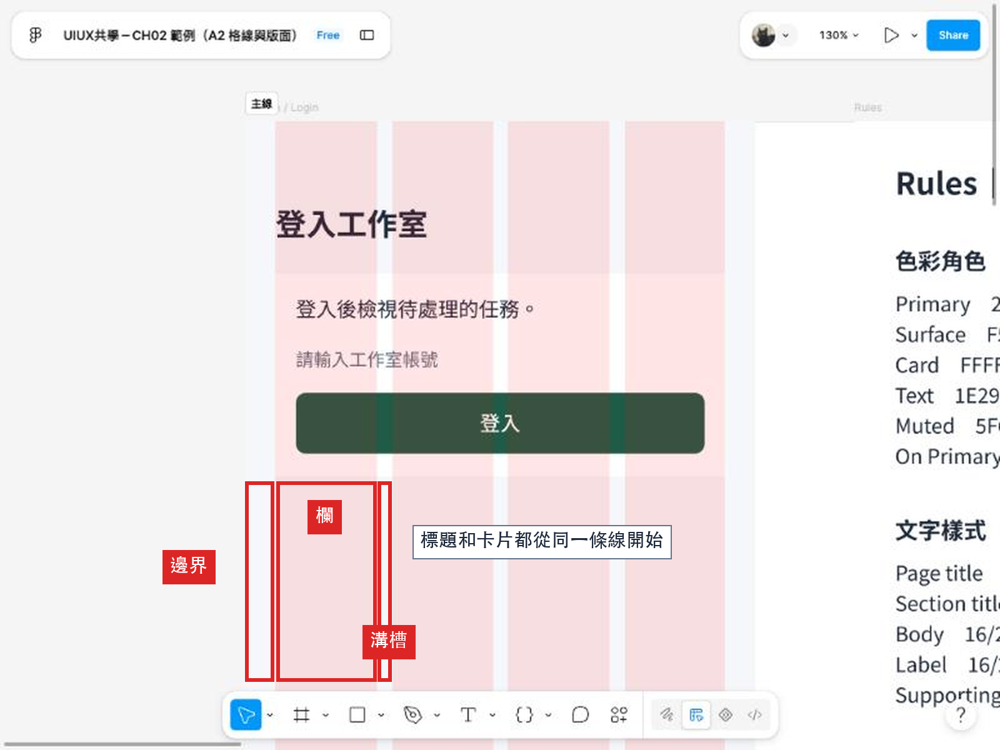
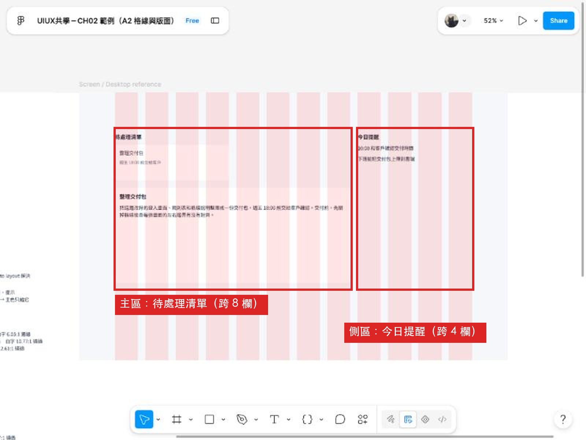
格線只是參考線，只存在設計檔裡。成員打開 App 時看不到粉紅色的直條；格線關掉，東西還是一樣整齊。
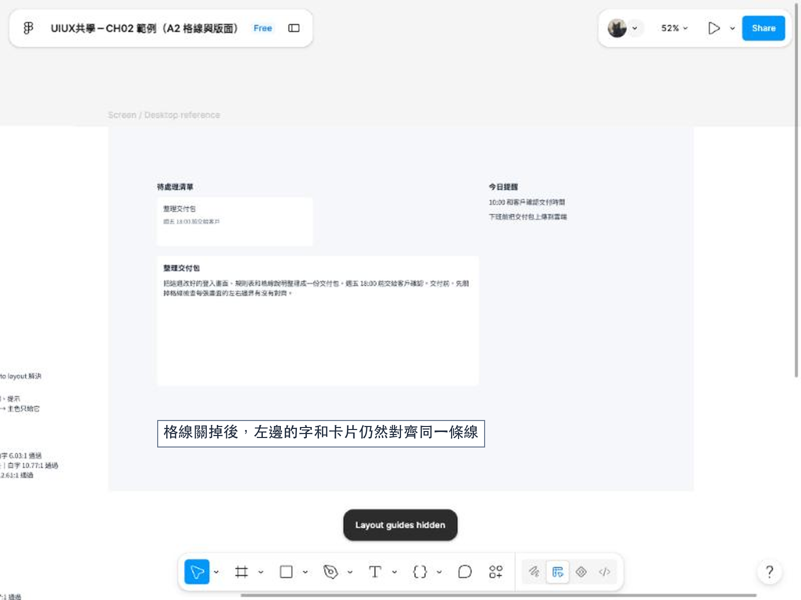
一份只做一件事，全部在你第一章的同一份檔案、同一個「主線」裡接著做，不用開新檔，也不會新增顏色和文字樣式。
每走完一段，都把數字和理由寫進第一章的規則表，規則表最後會多一區「格線與版面」。
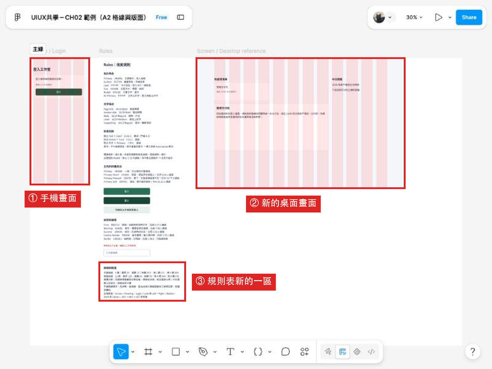
試著不看講義，用自己的話回答：
第 1 份回到你自己的檔案，替手機畫面 Screen / Login 加上四欄格線，檢查第一章的登入卡片是不是剛好落在邊界上。
第一章的登入卡片放在 X 24，答案是：24 剛好是邊界的寬度。現在回到你自己的檔案，替手機畫面加上同樣的四欄格線，親眼看看你的卡片落在哪裡。
數字照開場：左右邊界各 24，切成 4 欄，溝槽 12。整排放一個東西就是跨滿 4 欄；兩個對半放，就是各跨 2 欄。
| 事項 | 重點 |
|---|---|
| 要選整張手機畫面 | 點 Screen / Login，不是它底下的 Login / Card。點到卡片，格線就只會畫在卡片裡。 |
| Layout guide | 右側設定裡加格線的那一區。按 + 之後先給的是 Grid（方格）；我們要的是 Columns（直條），就是開場說的「欄」。 |
| 要改的三個欄位 | Count 是幾欄，Margin 是邊界，Gutter 是溝槽。Figma 先放的是 5 欄、邊界 0、溝槽 20，所以一開始最左最右沒有留白。Color、Type、Width 不用動。 |
做完會看到：手機畫面外圍出現藍色框，右側設定最上面寫 Frame，W 是 402、H 是 874。
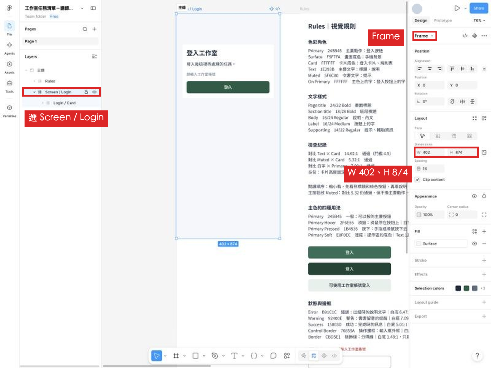
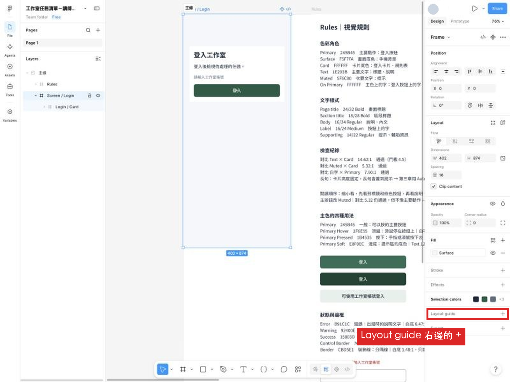
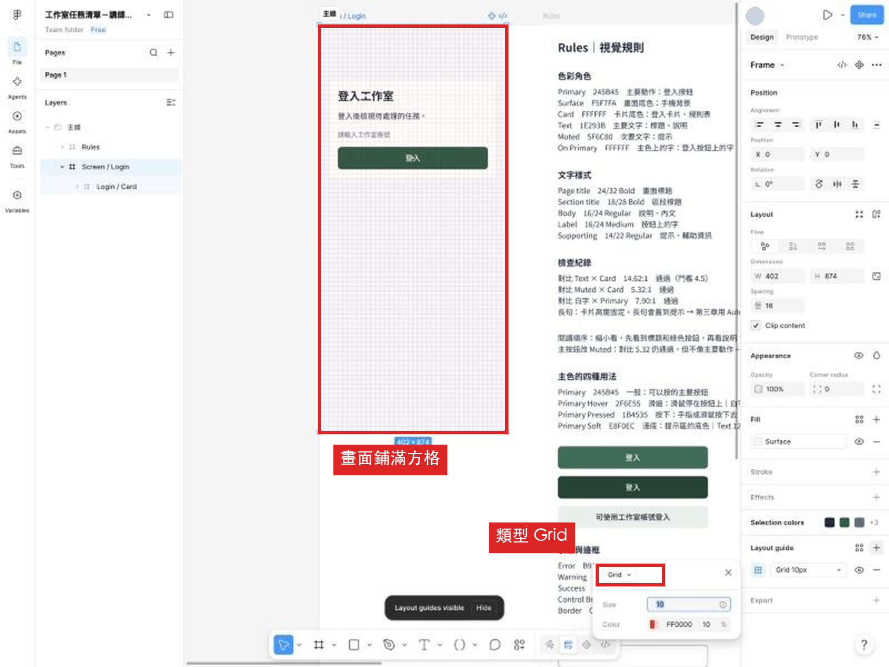
做完會看到：手機畫面鋪滿淡紅色的小方格，旁邊跳出一個小視窗，左上角寫著 Grid。
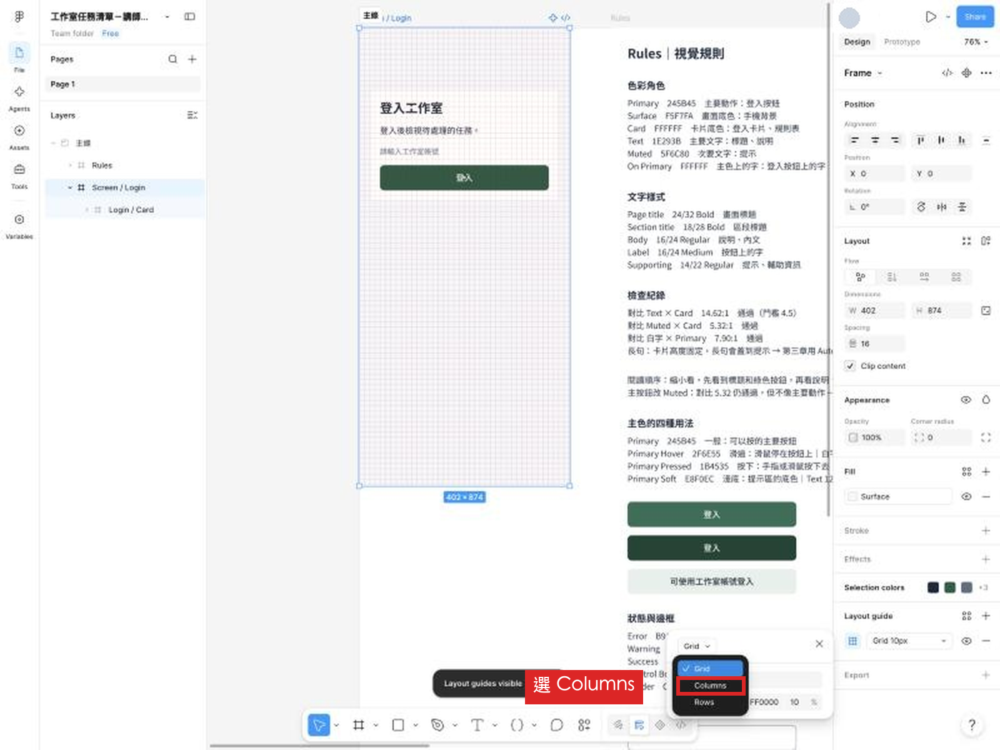
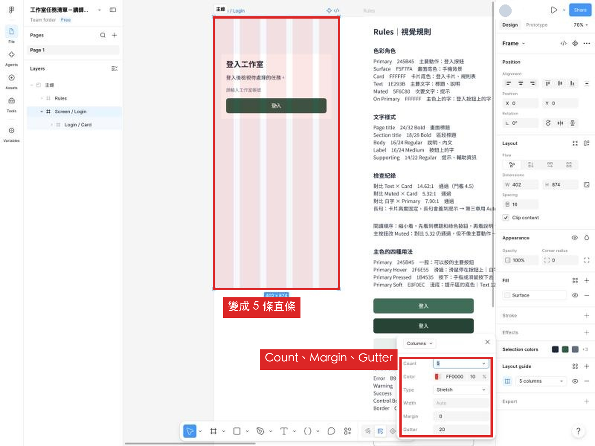
做完會看到：手機畫面變成 5 條粉紅色直條，最左和最右沒有留白。小視窗多了 Count、Margin、Gutter 等欄位。
| 欄位 | 原本 | 改成 |
|---|---|---|
| Count | 5 | 4 |
| Margin | 0 | 24 |
| Gutter | 20 | 12 |
做完會看到：4 條粉紅色直條，最左和最右各留一條空白（邊界），直條之間是細細的縫（溝槽）。Layout guide 那一列寫著 4 columns。
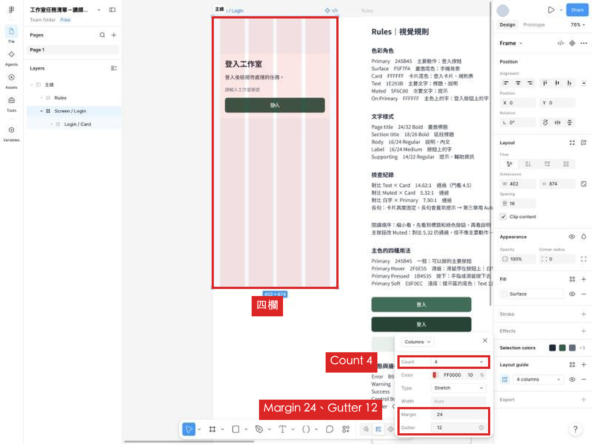
做完會看到：卡片左邊貼著第 1 欄的左邊，右邊貼著第 4 欄的右邊。X 是 24，W 是 354。
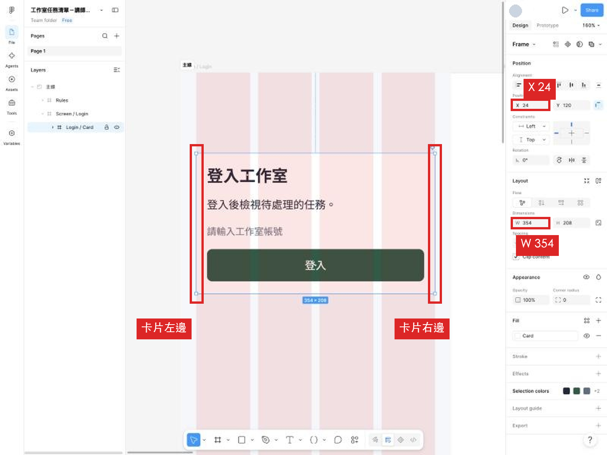
Shift+G 只是切換你看不看得到格線，不會改到檔案。格線關掉時看到的，就是成員在 App 裡會看到的樣子。
做完會看到：格線是開著的。接下來幾份都要對著欄移東西，所以最後要讓它開著。
| 狀況 | 怎麼辦 |
|---|---|
| 只有卡片裡出現直條 | 格線加到卡片上了。點 Login / Card，在 Layout guide 那一列點 −，再從第 1 步重做。 |
| 按了 + 看不到方格或直條 | 格線被關掉了。點畫布空白處，按 Shift+G。 |
| 小視窗關掉了，想再改數字 | 點 Screen / Login，點 Layout guide 那一列左邊的小圖示。 |
第 2 份要把「登入工作室」從卡片裡移出來，變成整個手機畫面的標題。它要放在哪裡，就靠剛加上的格線決定。
登入卡片的左右兩邊剛好停在邊界上，可是卡片裡的「登入工作室」沒有：它從卡片的邊往內縮了一段才開始。現在要把它搬到卡片外面，變成整個手機畫面的標題，和卡片站在同一條線上。
Title 現在在卡片裡，它的 X、Y 是從卡片的左上角量的。拖出卡片後，起點換成手機畫面的左上角：字不會動，右側的數字會變。
做完會看到：X 16、Y 16，Resizing 選中的是 Auto width。
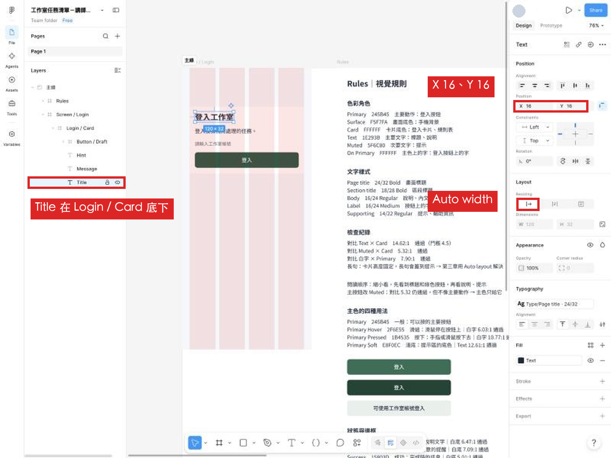
做完會看到：Title 跑到 Login / Card 上面，縮排一樣深。畫面上的字沒有動，右側卻變成 X 40、Y 136。
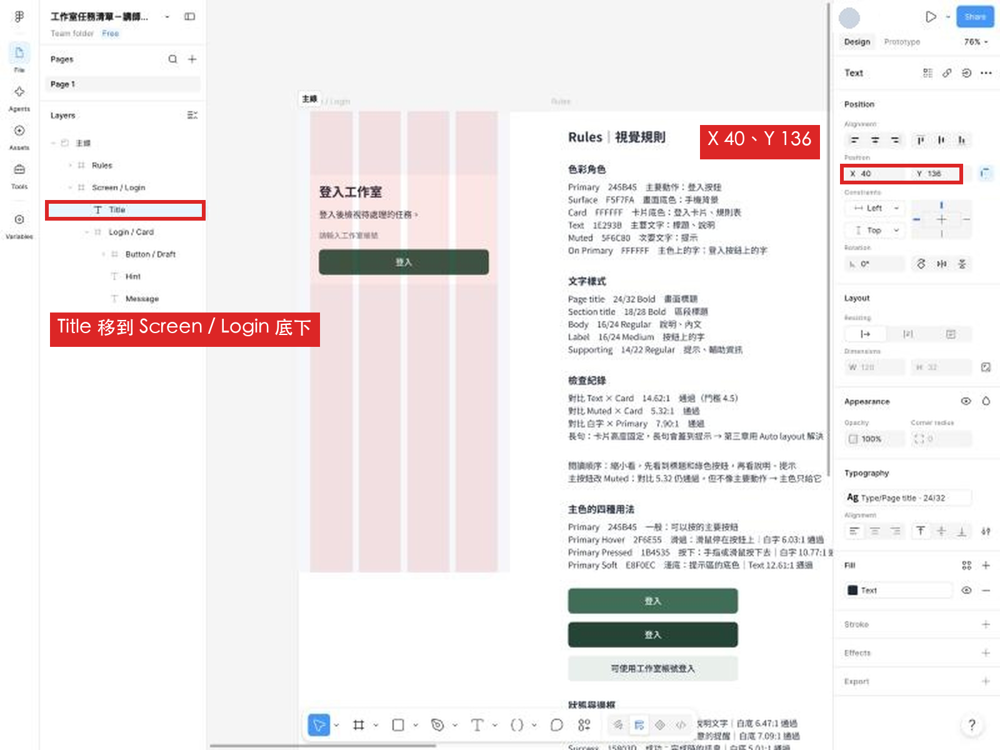
做完會看到：「登入工作室」跑到白色卡片上面，左邊和卡片對齊；卡片裡最上面空了一塊。
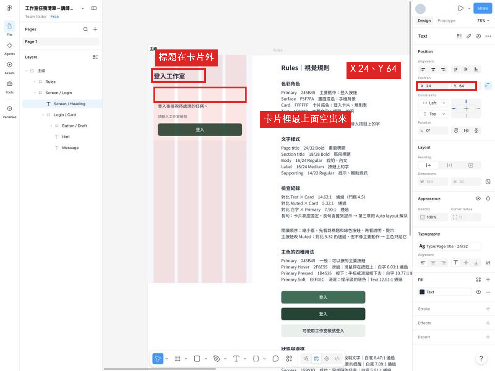
| Resizing | 像什麼 | 寬度 |
|---|---|---|
| Auto width | 一條紙條 | 由字決定，五個字只有 120 寬，定不了 354 |
| Fixed size | 固定大小的便利貼 | 寫不下的字會跑到框外 |
| Auto height | 固定寬度的筆記本 | 寫到邊就換下一行 |
做完會看到：字沒有變，外面的框從左邊界拉到右邊界，和卡片一樣寬。
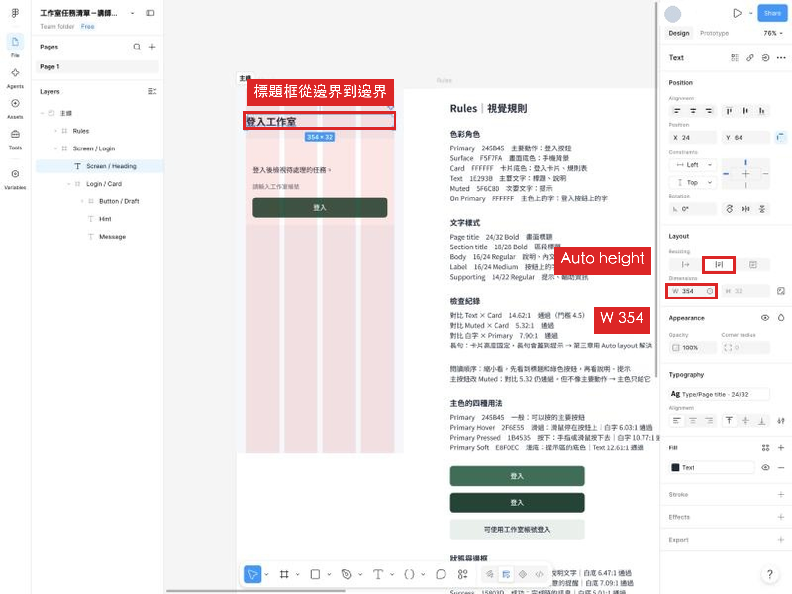
標題本來在卡片裡從 16 排到 48，下一樣東西從 64 開始。標題搬走後上面空出 48，剩下三樣都往上移 48；X 維持 16。
| 圖層 | Y 原本 | Y 改成 |
|---|---|---|
| Message | 64 | 16 |
| Hint | 104 | 56 |
| Button / Draft | 142 | 94 |
做完會看到：說明、提示和按鈕排在卡片上半部，彼此距離不變；卡片最下面空了一塊。
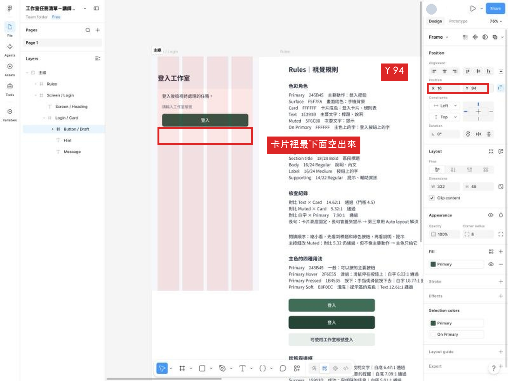
做完會看到：卡片下緣在按鈕下面一點點，和原本按鈕到卡片底的距離一樣。W 354、H 160。
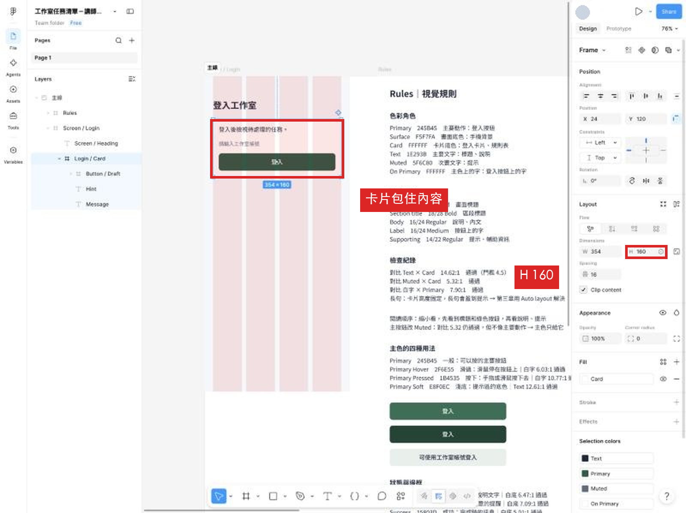
一次選好幾個東西時，右側只有大家的數字都一樣才顯示數字，不一樣就顯示 Mixed。
看完按 Shift+1 縮回整個作品，點空白處取消選取。
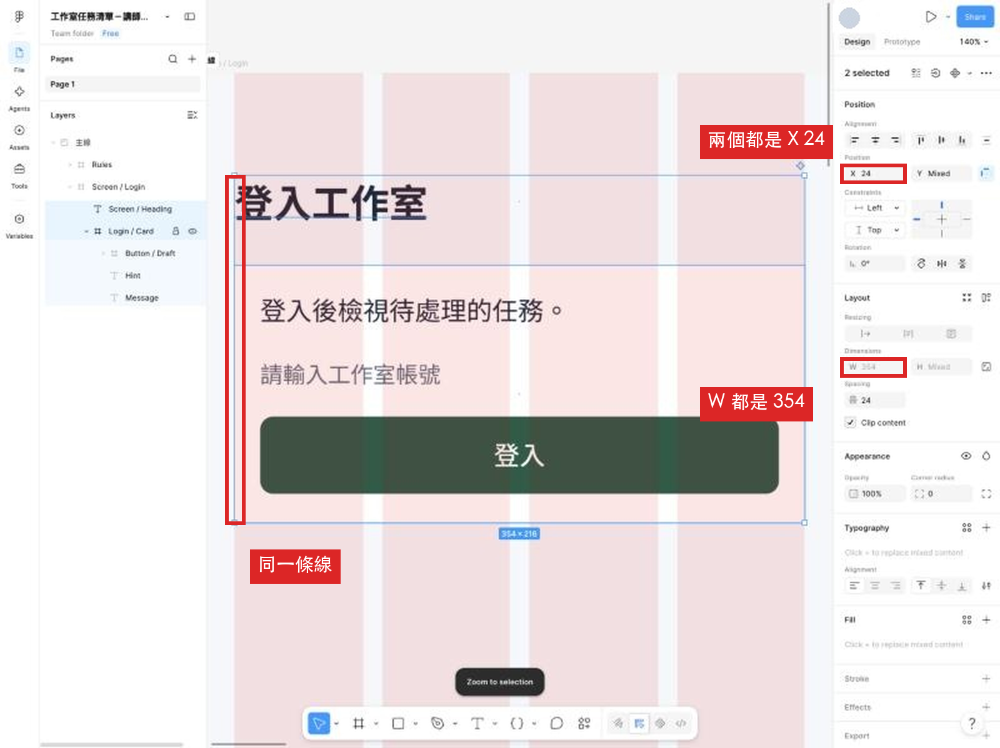
| 狀況 | 怎麼辦 |
|---|---|
| 拖完之後，Title 還縮排在 Login / Card 底下 | 放開的位置不對，再拖一次，放在 Screen / Login 那一行的字上面。 |
| Title 的縮排比 Login / Card 還淺 | 它被拖到手機畫面外面了。拖回 Screen / Login 那一行上，再重填 X 24、Y 64。 |
| W 是灰色的，改不了 | Resizing 還是 Auto width。先點第二個圖示 Auto height。 |
標題和卡片都跨滿 4 欄。如果兩個東西要並排、各佔一半，一半是多寬？第 3 份用欄算出這個數字，並在手機畫面上驗證。
標題和卡片都從左邊界排到右邊界，跨滿 4 欄，寬 354。可是畫面上不會每樣東西都這麼寬。兩個東西要並排、各佔一半時，一半是多寬？
79.5 不是整數沒有關係。Figma 照這個寬度畫欄，東西只要對齊欄線就好。
做完會看到：灰色方塊左邊貼著第 1 欄的左邊，右邊貼著第 2 欄的右邊，剛好蓋住兩欄和中間那條溝槽。
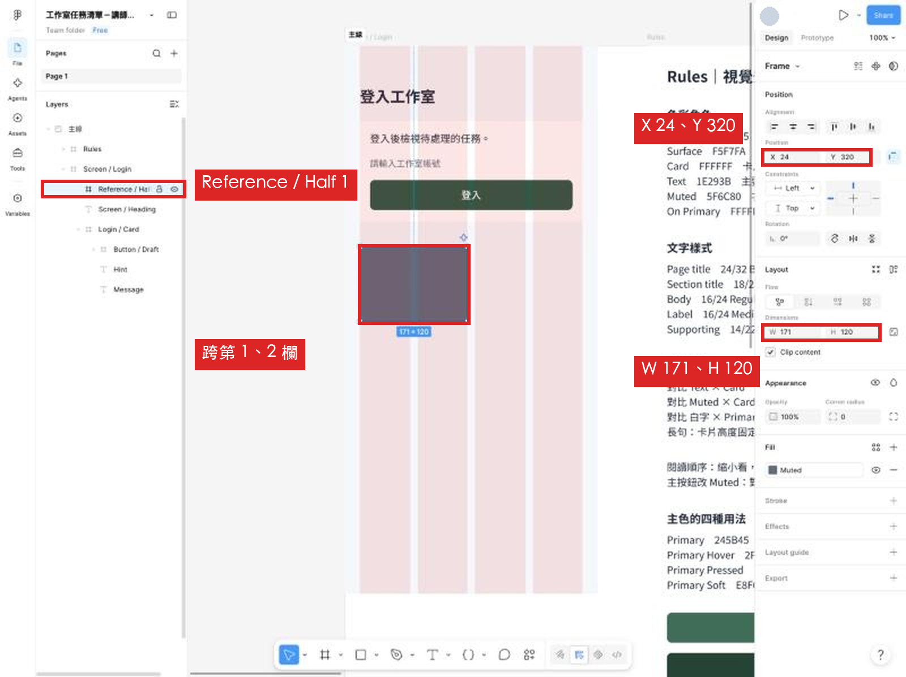
做完會看到：第二塊蓋住第 3、4 欄，右邊停在右邊界上，兩塊中間留著一條細縫。
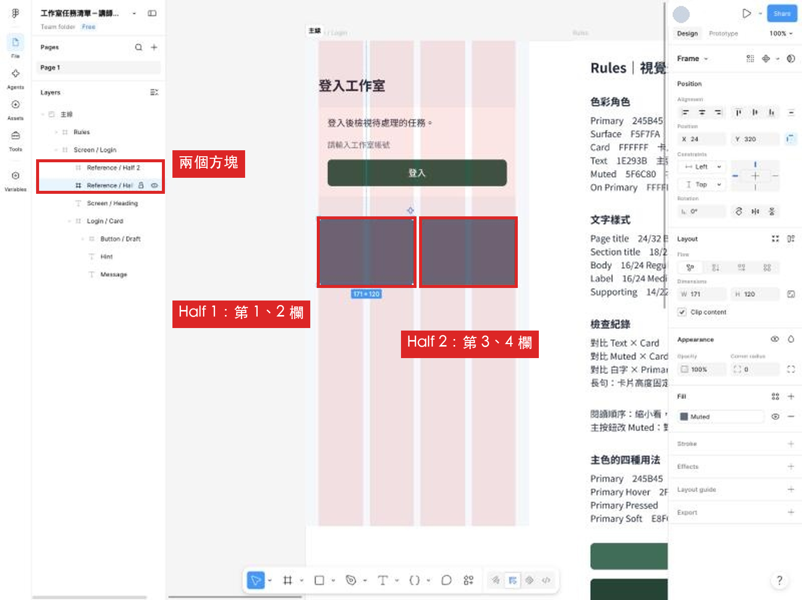
做完會看到：W 是 171，X 是 Mixed；Spacing 是 12；藍框下方寫著 354 × 120。
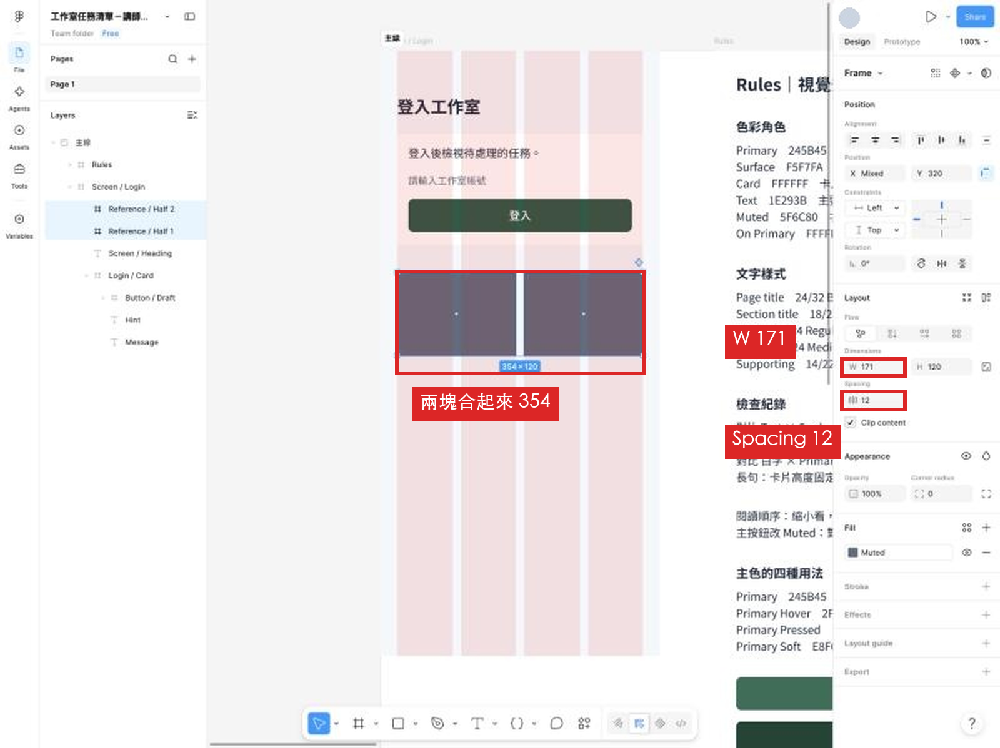
| 為什麼 | 理由 |
|---|---|
| 規則表一次加長到 1720 | 先把五行說明的位置留好，之後只要在同一段文字後面加一行，不用再改高度。 |
| 第 1 行用 Auto height、W 536 | 規則表寬 600，左右各留 32，能寫字的寬度是 536；字太長就換行，不會超出規則表。和替標題選 Auto height 是同一個理由。 |
做完會看到：分隔線下面一行粗體小標題，和上面「狀態與邊框」一樣大、一樣顏色。
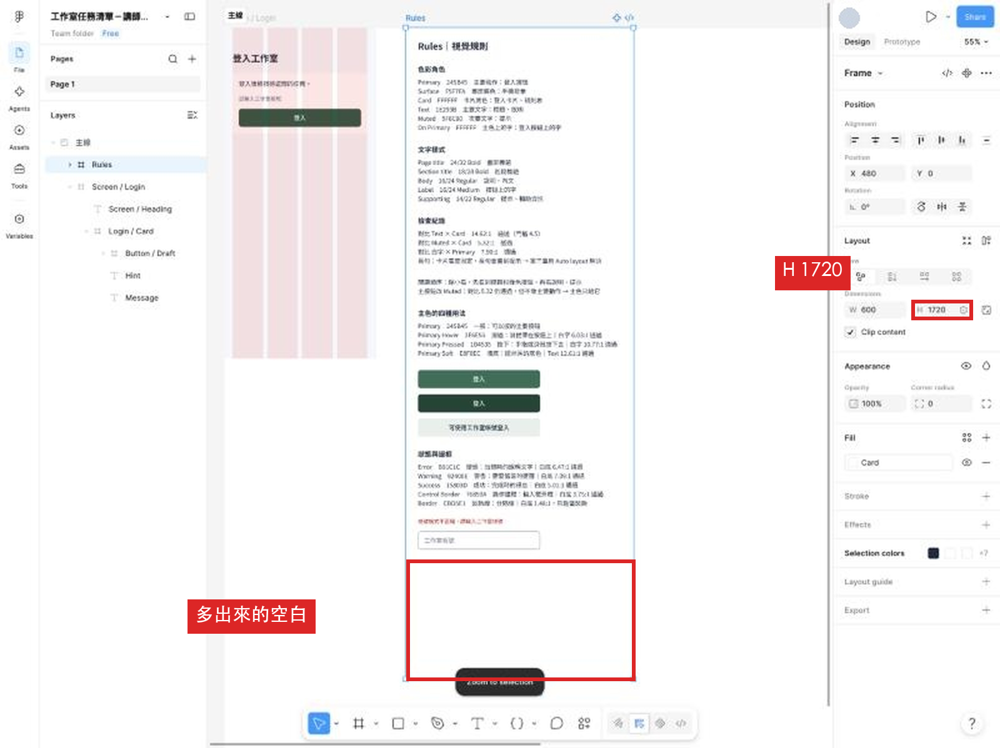
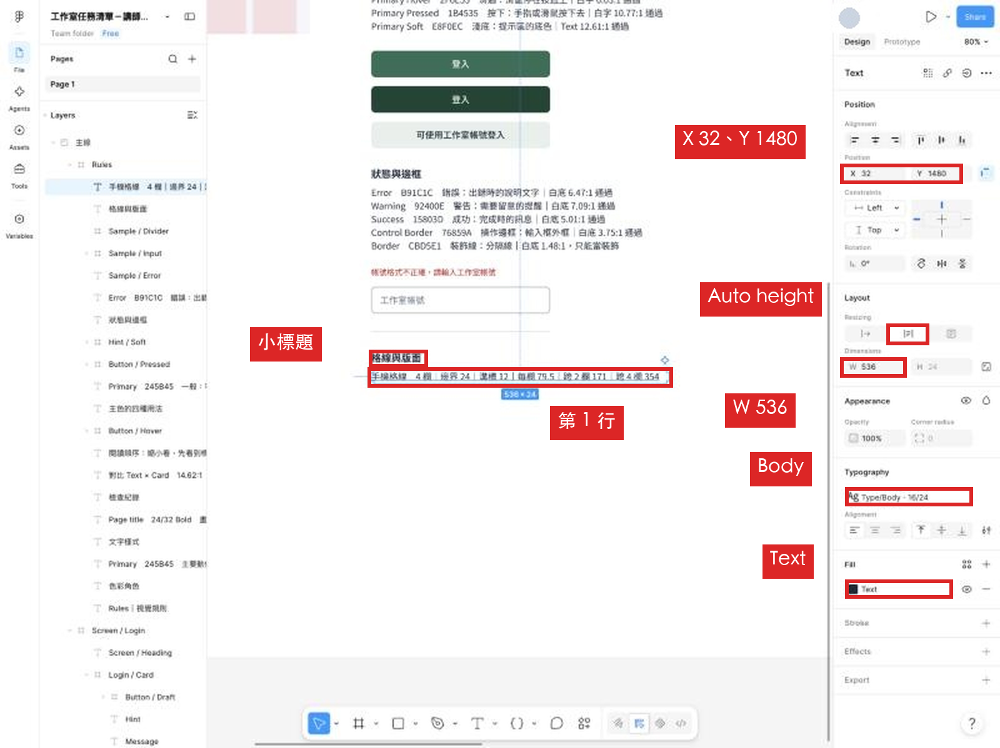
| 狀況 | 怎麼辦 |
|---|---|
| 方塊沒有縮排在 Screen / Login 底下 | 拉框起點在手機畫面外面。拖到 Screen / Login 那一行上，重新填 X、Y。 |
| 第二個方塊縮排在 Reference / Half 1 底下 | 從第一塊上面開始拉了。拖到 Screen / Login 那一行上，重新填 X 207、Y 320。 |
| 方塊是白色的 | Fill 還是剛加上時的白色。四點圖示選 Muted。 |
| 小標題或第 1 行不在規則表裡 | 點到規則表外面了。拖到 Rules 那一行上，重新填 X、Y。 |
第 4 份換到電腦螢幕：做一張寬 1440 的桌面畫面，切成 12 欄，算出每欄多寬、跨 4 欄和跨 8 欄各是多少，寫進規則表第 2 行。
工作室裡有人整天坐在電腦前，所以 App 也要有在電腦螢幕上看的桌面畫面。現在換到桌面：做一張寬 1440 的畫面，切成 12 欄，再用上一份的方法算出它的數字，寫進規則表第 2 行。
| 手機 | 桌面 | |
|---|---|---|
| 欄數 | 4 | 12 |
| 邊界 | 24 | 120 |
| 溝槽 | 12 | 24 |
Screen / 表示一張完整的畫面；reference 是「參考」：用這張畫面排版面。X 1160 讓它和規則表之間空出 80；Y 0 讓三樣東西上緣切齊。
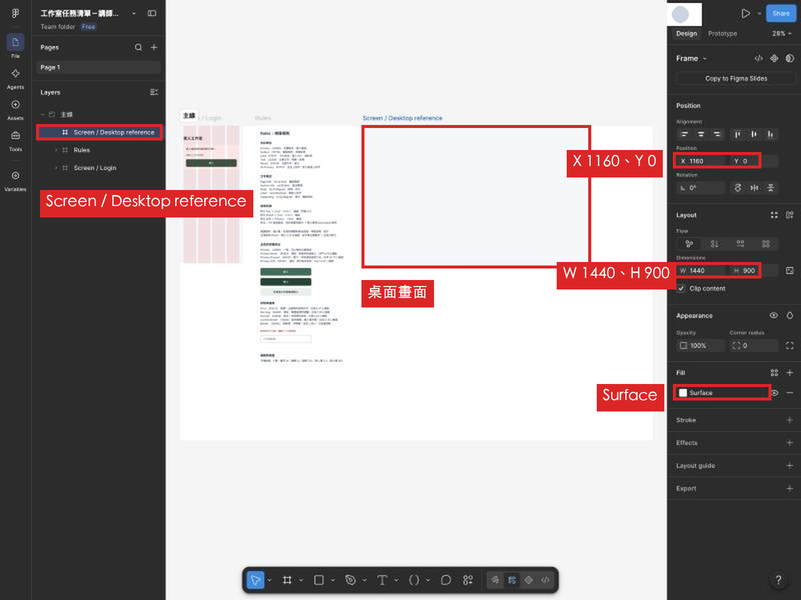
做法和第 1 份替手機加格線一樣，只是數字不同。
| 欄位 | 手機 | 桌面 |
|---|---|---|
| Count | 4 | 12 |
| Margin | 24 | 120 |
| Gutter | 12 | 24 |
做完會看到：12 條粉紅色直條，左右各空出一段。Layout guide 那一列寫著 12 columns。
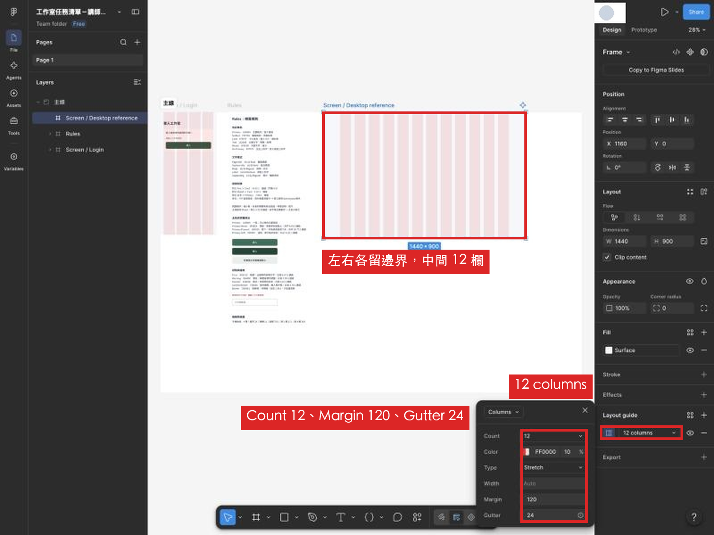
做完會看到：最左和最右各一段沒有粉紅色的地方，是邊界 120；中間 12 條粉紅色是欄；欄和欄之間細細的空白是溝槽 24。
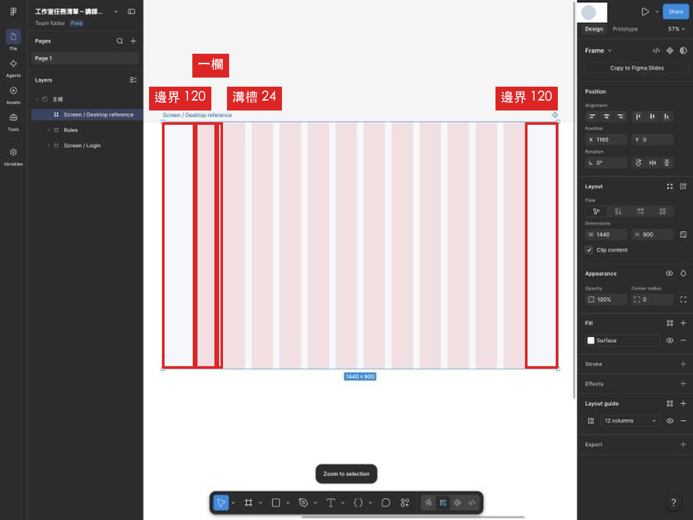
主區 792，加中間一條溝槽 24，再加側區 384，等於 1200。
1440 扣掉左右兩段邊界，剩下的也正好是 1200。
只要每一塊都說好跨幾欄，加起來一定對得上。
做完會看到：兩行在同一個文字框裡，W 還是 536，H 從 24 變成 48。
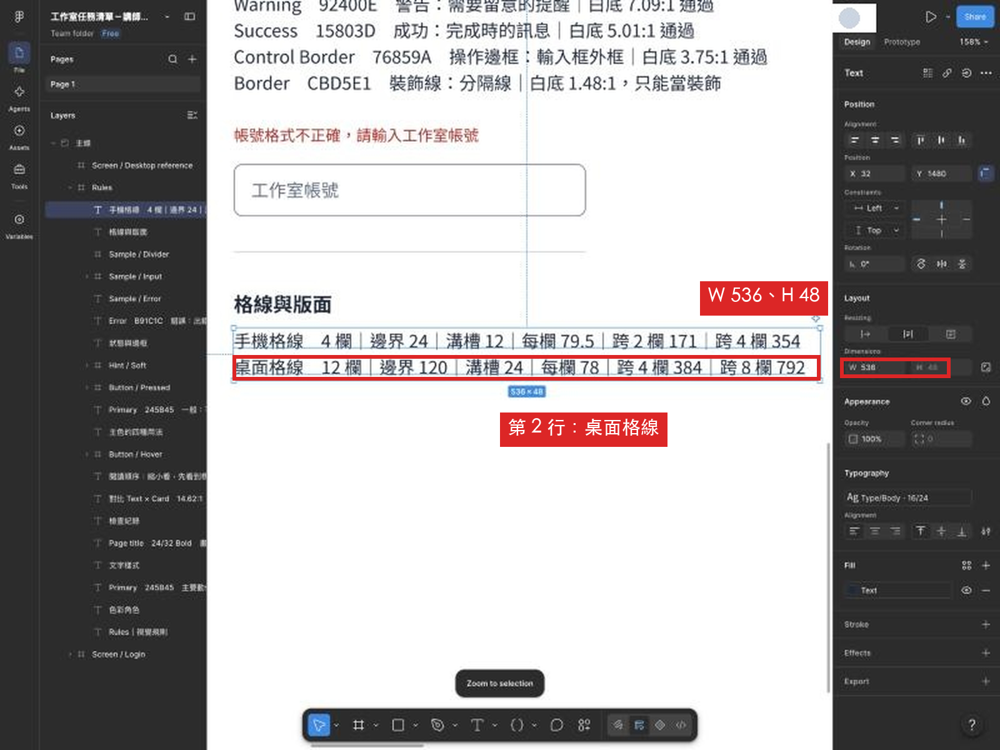
| 狀況 | 怎麼辦 |
|---|---|
| 桌面畫面沒有縮排在主線底下 | 拖到主線那一行上，和 Rules 一樣深，再重填 X 1160、Y 0。 |
| 格線加到了規則表或手機畫面上 | 到加錯的那一個點 − 拿掉，再選 Screen / Desktop reference 重加。 |
| 第 1 行不見了，只剩第 2 行 | 反白時就貼上了。Cmd+Z（Windows 是 Ctrl+Z）復原，先點「354」右邊再貼。 |
| 第 2 行變成另一個文字框 | 用文字工具另外點了新框。刪掉它，再照第 4 步雙擊第 1 行。 |
第 5 份在桌面畫面上做出主區和側區：主區跨 8 欄、寬 792，側區跨 4 欄、寬 384，各放一個小標題。
用上一份算出的跨 8 欄寬 792、跨 4 欄寬 384，把桌面畫面分成兩塊：左邊放待處理清單的主區，右邊放今日提醒的側區，再替兩塊各放一個小標題。
放你打開這個畫面要做的事：讀信、看影片、挑商品。
在旁邊幫忙：換資料夾、找下一部影片、縮小商品範圍；不看它也能把事情做完。
現在先做兩個空的區：區是用來排版的，看的人看不到它的框。區放在對的欄上，裡面的東西貼齊區的左邊，就自動對齊格線。
側區結束在 936 + 384 = 1320；右邊界從 1440 − 120 = 1320 開始。
兩個數字一樣：兩區合起來剛好從左邊界排到右邊界。
上下：兩區的 Y 都是 120，和左右邊界一樣寬；高度先定 540，這一章在意的是寬度。
Desktop / Main；X 120、Y 120；W 792、H 540。做完會看到：藍色外框的左邊對齊第 1 欄的左邊，右邊對齊第 8 欄的右邊。
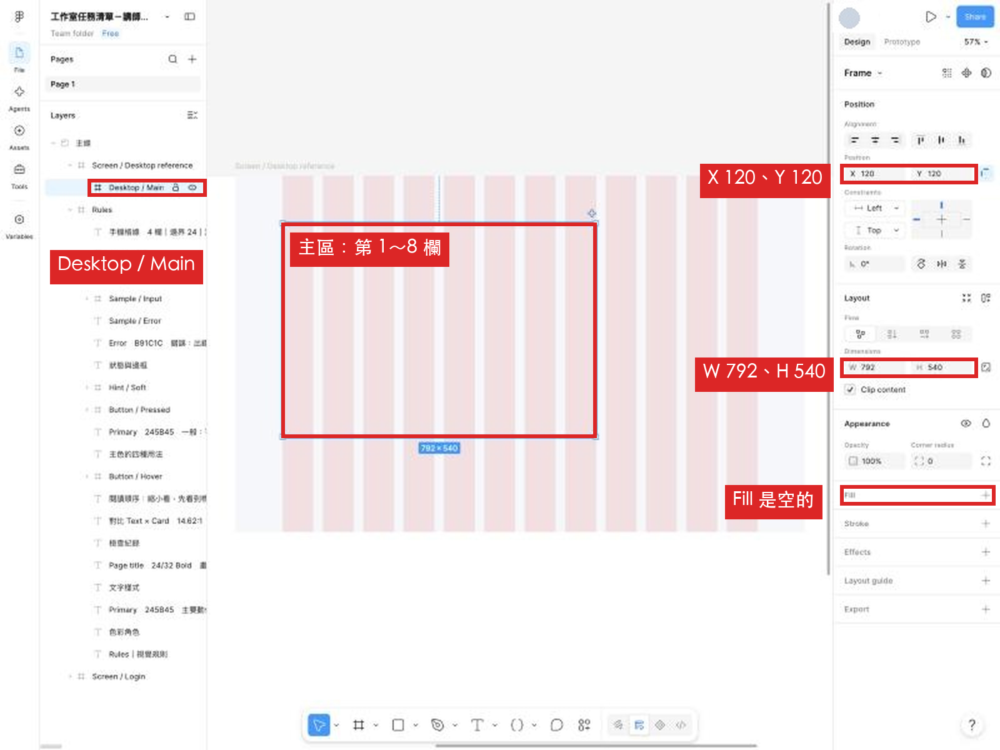
Desktop / Aside；X 936、Y 120；W 384、H 540。做完會看到：外框從第 9 欄的左邊開始，到第 12 欄的右邊結束，貼齊右邊界。
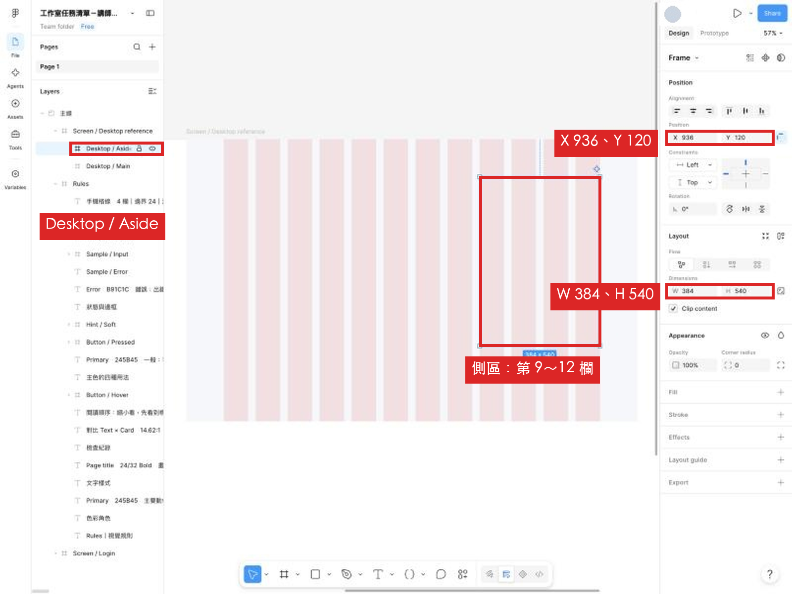
和第 2 份的畫面標題同一個道理，只是範圍小一點：畫面標題說現在在哪一頁，小標題說這一塊是什麼。樣式用 Section title。
| 動手前先知道 | 重點 |
|---|---|
| X 0、Y 16 從哪裡量 | 從區的左上角量。X 0 貼齊區的左邊，主區的左邊就是左邊界，所以自己就對齊了格線。Y 16 和登入卡片裡第一行字離上緣的距離一樣。 |
| 名字 | 打完字，名字會是那段字本身；改成 Main / Title、Aside / Title，寫的是用途。 |
| 文字樣式 | Figma 會沿用上一次的樣式，打完字先看一眼 Typography。 |
| 主區 | 側區 | |
|---|---|---|
| 先選 | Desktop / Main | Desktop / Aside |
| 打的字 | 待處理清單 | 今日提醒 |
| 樣式、顏色 | Section title、Text | |
| 位置 | X 0、Y 16 | |
| 名字 | Main / Title | Aside / Title |
做完會看到：「待處理清單」左邊和第 1 欄切齊；「今日提醒」左邊和第 9 欄切齊。
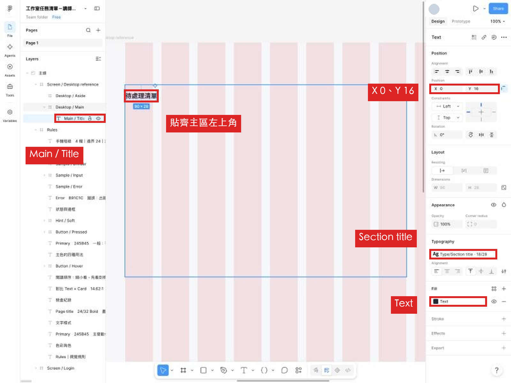
做完會看到：畫布上兩區合起來是 1200 × 540；Y 120、H 540；Spacing 是 24，就是兩區之間的那一條溝槽。
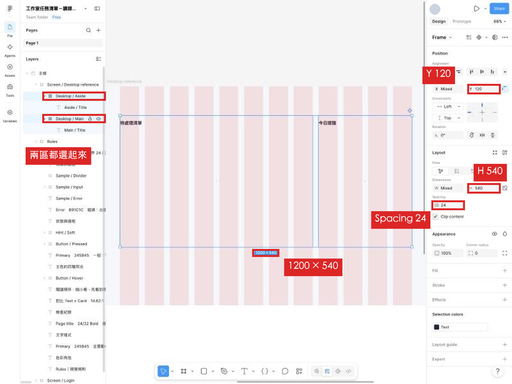
| 狀況 | 怎麼辦 |
|---|---|
| Desktop / Aside 縮排在 Desktop / Main 底下 | 起點在主區裡。拖到 Screen / Desktop reference 那一行上，再重填 X 936、Y 120。 |
| 小標題跑到桌面畫面的左上角 | 字沒有在區裡。拖到該區那一行上，再重填 X 0、Y 16。 |
| 主區或側區看不到 | 區沒有填顏色，本來就看不到。在 Layers 點名字。 |
第 6 份把內容放進去：主區放清單卡和詳情卡，側區放兩則提醒；也把主區為什麼跨 8 欄、側區為什麼跨 4 欄，寫進規則表第 3 行。
主區放一張清單卡、一張詳情卡，側區放兩則今日提醒。真正要學的，是放進去之前的判斷：每一塊要跨幾欄，看它放什麼內容。最後把這個判斷寫進規則表第 3 行。
| 清單 | 詳情 | |
|---|---|---|
| 用手機收信 | 一行一封，只寫寄件人和主旨 | 點開才看到整封信的內容 |
| 外送 App | 一張卡片只有店名、評分和大概多久送到 | 點進店家才看到整份菜單 |
| 用途 | 從很多件裡挑出要處理的那一件 | 把挑中的那一件完整攤開 |
| 要放的東西 | 幾個短短的字，認得出是哪一件就好 | 完整的說明，常常是一整段話 |
看一塊東西要放什麼內容，決定它跨幾欄，並把這個判斷寫成一句跨欄決策。
先看這一塊要放什麼，放得下、排得開就好，不是越寬越好。
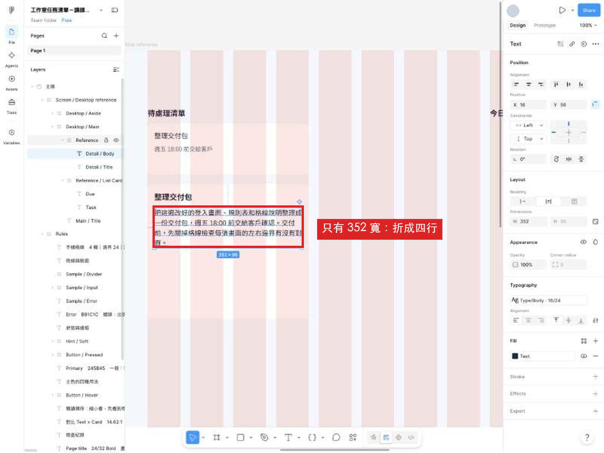
判斷做完要寫下來：規則表第 3 行寫的就是跨欄決策。之後要多放一塊，翻規則表就知道當初怎麼想的。
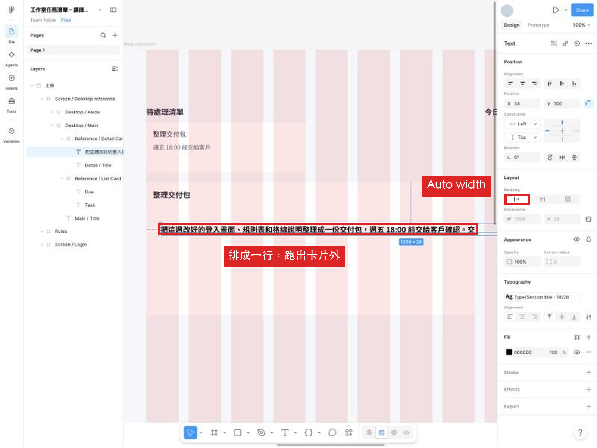
| 卡片 | 名字 | 位置與大小 | 跨幾欄 |
|---|---|---|---|
| 清單卡 | Reference / List Card | X 0、Y 56、W 384、H 120 | 4 |
| 詳情卡 | Reference / Detail Card | X 0、Y 200、W 792、H 320 | 8 |
做完會看到：清單卡從第 1 欄排到第 4 欄，詳情卡從第 1 欄排到第 8 欄，左邊切齊。卡片偏粉紅，是因為格線畫在卡片上面。
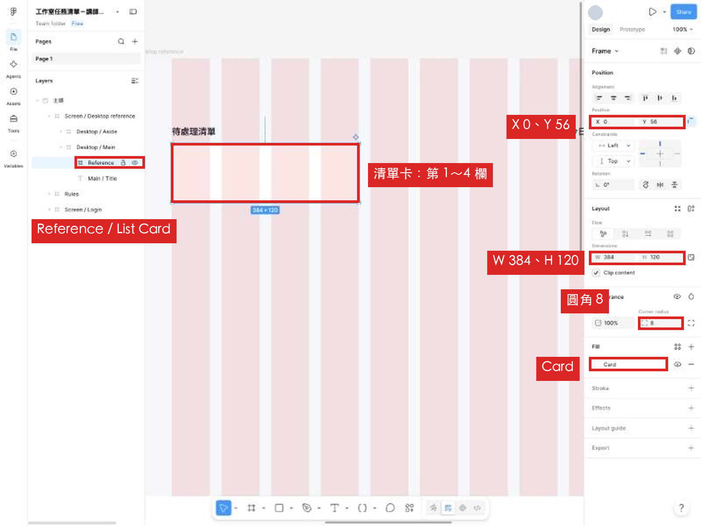
| 字 | 放在 | 樣式、顏色 | 位置 | 名字 |
|---|---|---|---|---|
| 整理交付包 | 清單卡 | Body、Text | X 16、Y 16 | Task |
| 週五 18:00 前交給客戶 | 清單卡 | Supporting、Muted | X 16、Y 48 | Due |
| 整理交付包 | 詳情卡 | Section title、Text | X 16、Y 16 | Detail / Title |
| 一段說明 | 詳情卡 | Body、Text | X 16、Y 56、W 760 | Detail / Body |
| 10:00 和客戶確認交付時間 | 側區 | Body、Text | X 0、Y 56、W 384 | Reminder / 1 |
| 下班前把交付包上傳到雲端 | 側區 | Body、Text | X 0、Y 92、W 384 | Reminder / 2 |
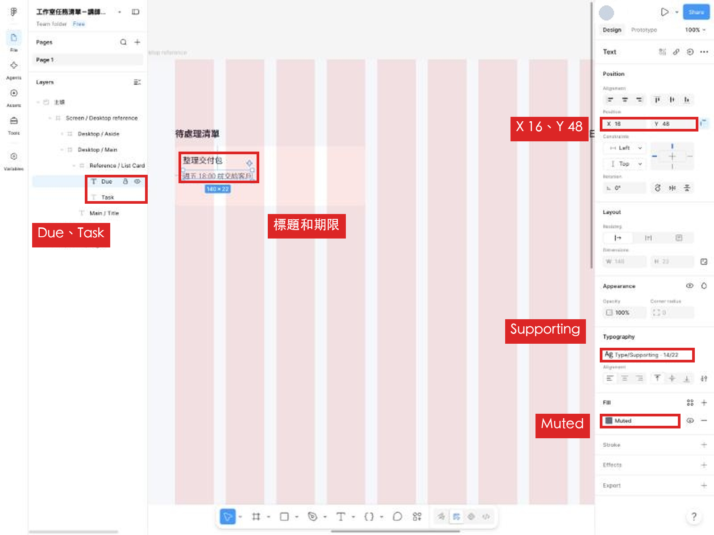
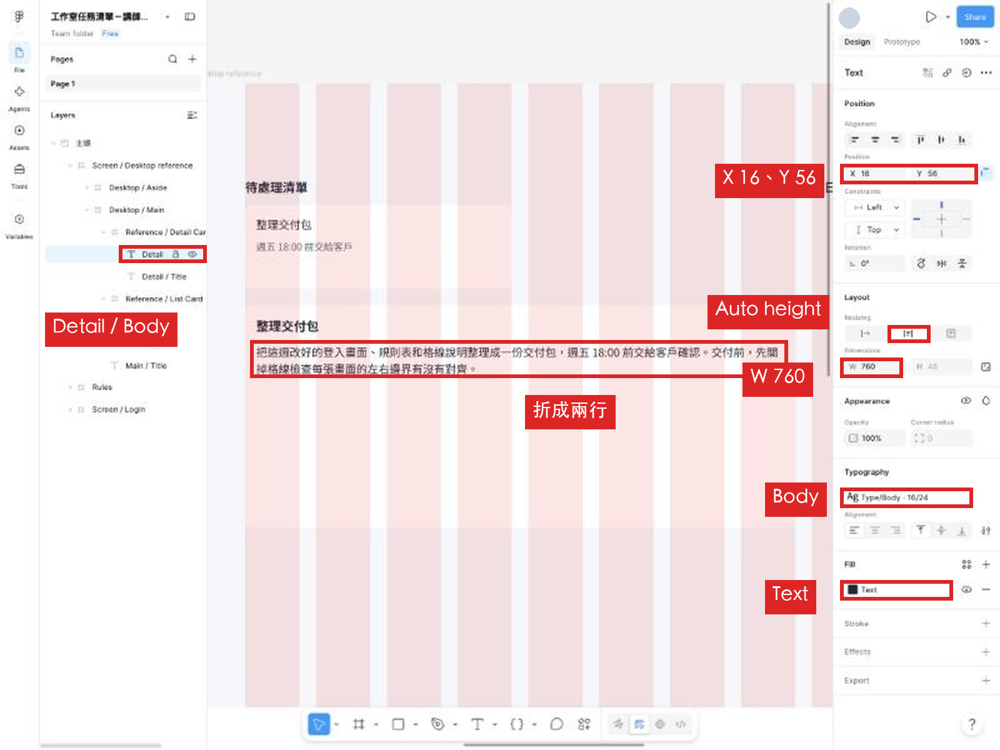
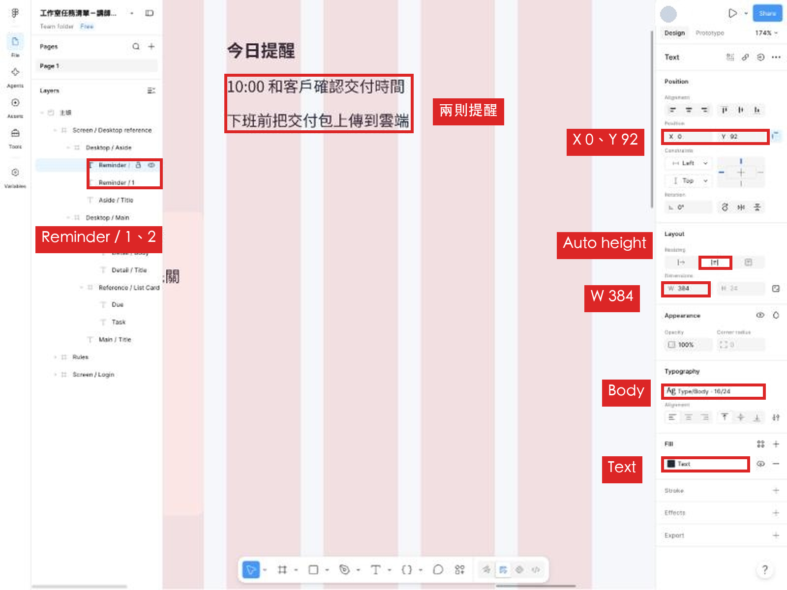
做完會看到：在 536 寬裡折成兩行，H 從 48 變成 96。
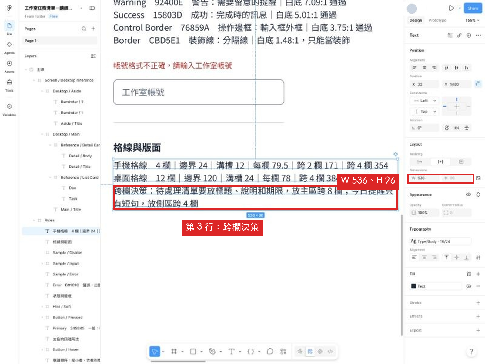
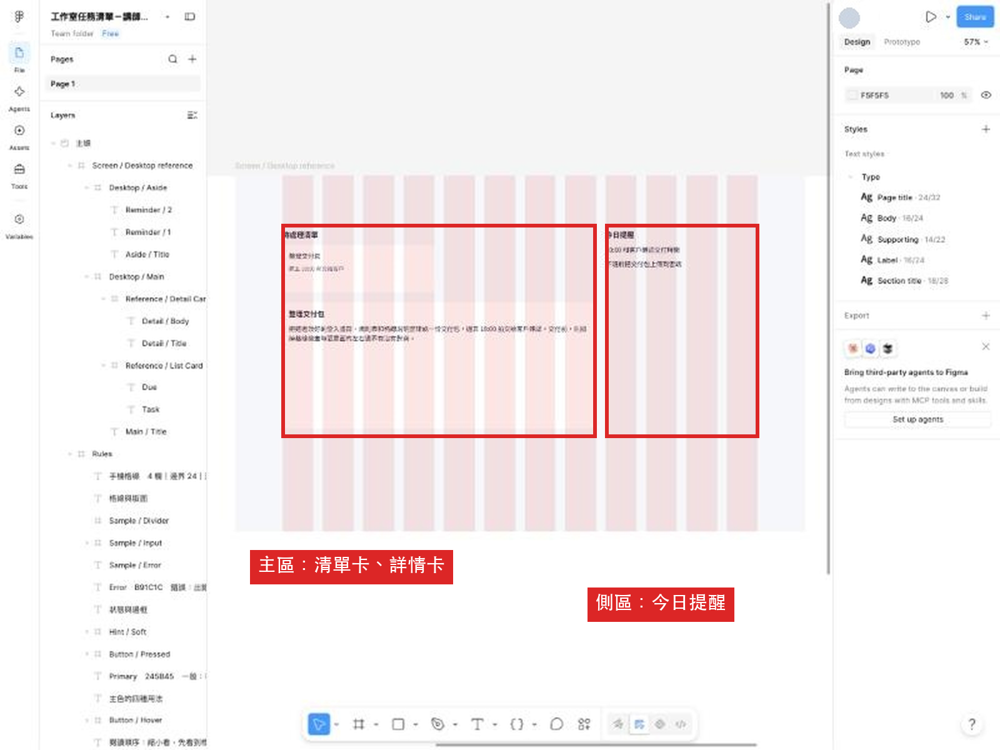
| 狀況 | 怎麼辦 |
|---|---|
| 卡片沒有縮排在 Desktop / Main 底下 | 拉框起點在主區外面。拖到 Desktop / Main 那一行上，重填 X、Y。 |
| 詳情卡縮排在清單卡底下 | 起點落在清單卡裡。拖到 Desktop / Main 那一行上，重填 X 0、Y 200。 |
| 字沒有縮排在該在的地方 | 拖到表上寫的卡片或 Desktop / Aside 那一行上，重填 X、Y。 |
| W 是灰色的 | Resizing 還是 Auto width。先點 Auto height。 |
手機窄，桌面上左右並排的主區和側區，到了手機只能上下排。第 7 份回答開場的問題：換到手機時，誰先出現？
主管最在意的是手機，而手機很窄。桌面上左右並排的兩區，放到手機上要怎麼排？要學兩個判斷：為什麼要改成上下排，還有上下排的時候，誰排在前面。
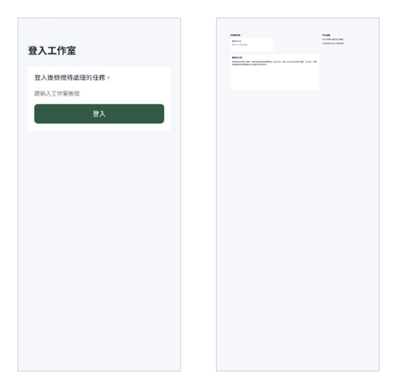
所以手機上改成上下排：每一塊都跨滿 4 欄、寬 354；一塊排完，下一塊接在下面，手指往下滑就看得到。字維持原本大小。
收信是為了看信，看影片是為了看那一支，逛購物網站是為了看商品。第 5 份判斷主區時問的「打開這個畫面要做什麼」，到了手機，就成了排順序的依據。
資料夾、篩選條件：一長串選項，又不是每次都用，排在前面會把主要的東西擠到很下面。
接下來的影片：看完這一支才要挑，排在下面剛好。
你的檔案裡不用做手機版的待處理清單畫面。要學的是判斷，還有把判斷寫下來；真正的手機畫面後面的章節才會做，到時候照規則表上的順序排。
做完會看到：折成兩行，W 還是 536，H 從 96 變成 144。
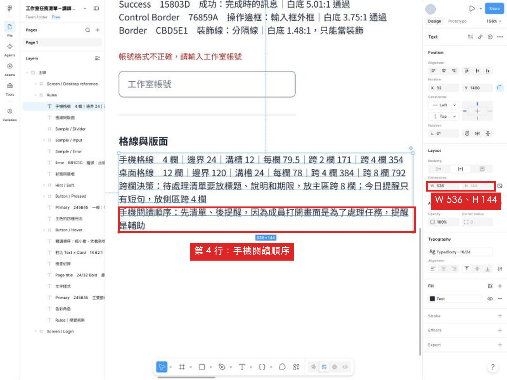
| 狀況 | 怎麼辦 |
|---|---|
| 貼上之後，整段字只剩新的這一行 | 反白時就貼上了。Cmd+Z（Windows 是 Ctrl+Z）復原，先點「4 欄」右邊再貼。 |
| 新的一行接在「4 欄」後面，沒有換行 | 少按了 Enter。在「手機閱讀順序」前面點一下，按 Enter。 |
手機也有寬有窄。第 8 份回答開場預告的最後一件事：畫面變寬時，標題和卡片跟著變寬，按鈕保持原本大小、待在中間，要怎麼設定？
手機不只一種寬度。畫面變寬時，標題和卡片跟著變寬，按鈕保持原本大小、待在中間，要怎麼讓 Figma 照這個意思做？要學的是 Constraints，以及「拉寬再改回來」的檢查方法。
格線只是參考線，它跟著畫面變，東西不會跟著它變。
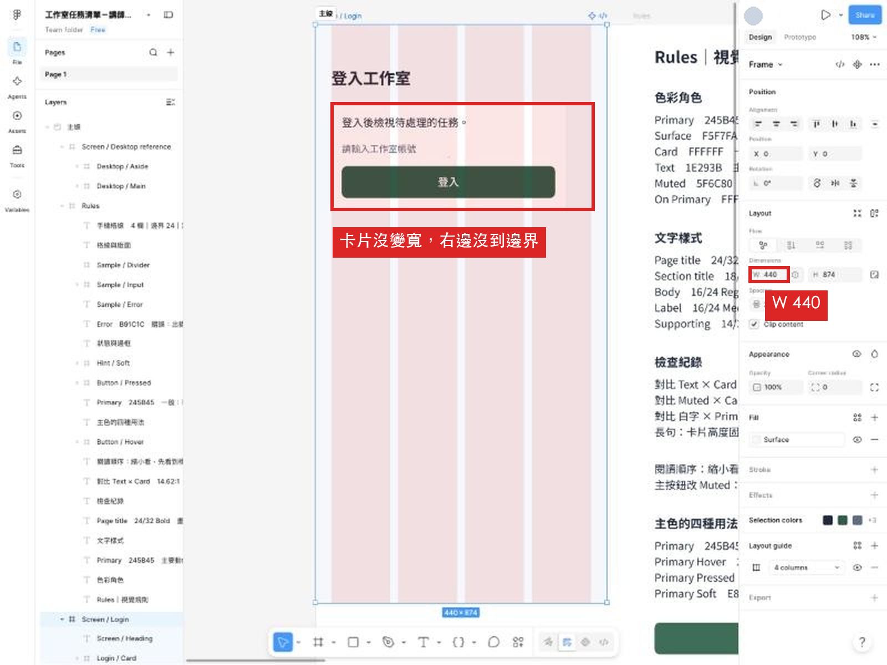
跟著的是所在的那一個框：標題和卡片跟著手機畫面；按鈕跟著卡片。這和 X、Y 從所在的框量，是同一個道理。
| 水平選項 | 框變寬時 |
|---|---|
| Left | 和左邊的距離不變，寬度也不變（預設） |
| Right | 和右邊的距離不變，寬度不變，往右移 |
| Left + Right | 左右兩邊的距離都不變，跟著變寬 |
| Center | 寬度不變，一直待在中間 |
| Scale | 位置和大小照比例一起變，這一章用不到 |
不變的是規則「跨滿 4 欄、邊界 24」，數字跟著畫面變。標題的文字框跟著變寬，長一點的標題也有地方排。
上下方向不用動。設定完把畫面拉寬檢查，再改回 402：數字都回到原本的樣子，表示設定沒有把東西弄亂。
| 動手前先知道 | 重點 |
|---|---|
| Constraints 在哪裡 | 右側 Position 的 X、Y 下面，兩個下拉：上面是水平（一開始是 Left），下面是垂直（Top）；右邊小圖亮起來的線表示跟著哪一邊。 |
| 改寬度 | 改的是整張手機畫面 Screen / Login 的 W，不是卡片的 W。 |
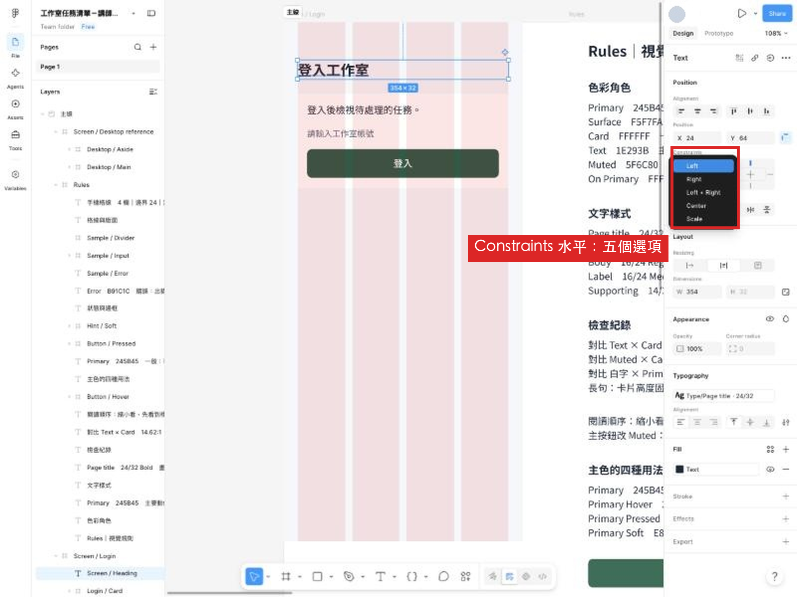
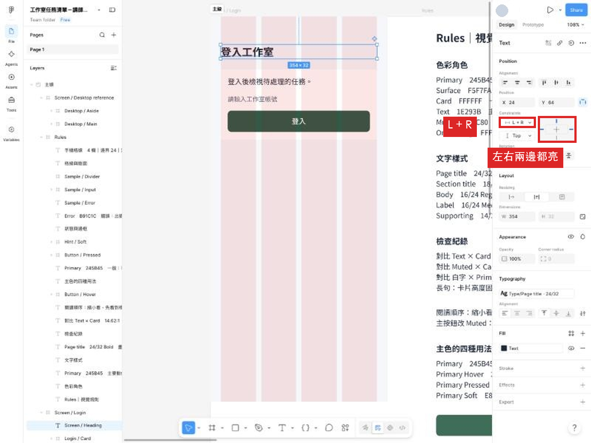
做完會看到：下拉顯示縮寫 L + R，小圖左右兩條線亮起來。畫面上的標題沒有動，要等畫面變寬才看得出差別。
做完會看到：選按鈕時，下拉顯示 Center（字可能被切成「Cente」），小圖中間那條線亮起來。
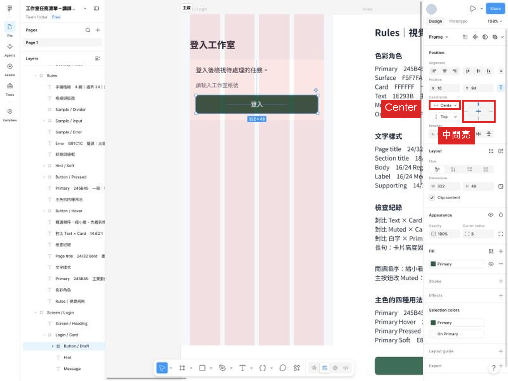
| W 440 | 改回 402 | |
|---|---|---|
| Screen / Heading | W 392 | W 354 |
| Login / Card | W 392 | W 354 |
| Button / Draft | W 322，X 35 | X 16 |
寬 440 時，卡片延伸到右邊的邊界，按鈕移到卡片中間。
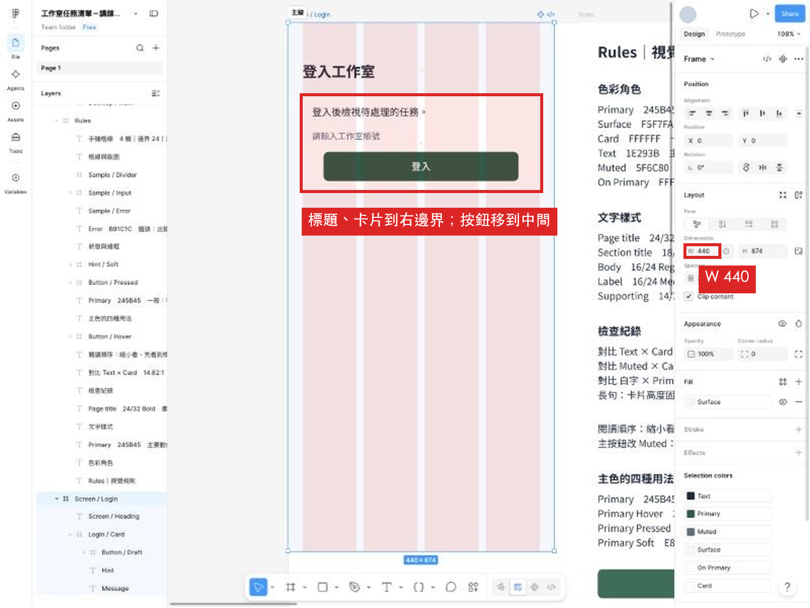
做完會看到：折成兩行，W 還是 536，H 從 144 變成 192。
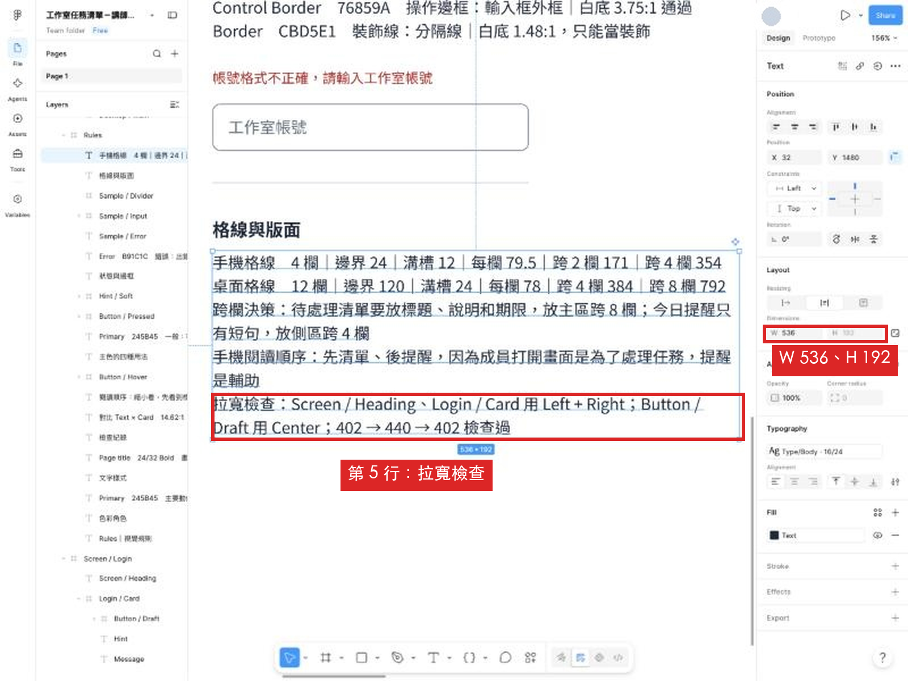
| 狀況 | 怎麼辦 |
|---|---|
| 改了 W，標題和卡片還是沒變寬 | 先看水平是不是 L + R；再看改的是不是 Screen / Login 的 W。 |
| 拉寬後，標題的文字框沒有變成 392 | Resizing 可能還是 Auto width。W 改回 402，標題改 Auto height、W 354，再重新拉寬。 |
| 改回 402 後，數字和原本不一樣 | Cmd+Z（Windows 是 Ctrl+Z）復原到拉寬之前，確認三個 Constraints，再重做第 4 步。 |
這一章管的是寬度。下一章處理另一個方向：文字變長、東西變多時，卡片要跟著長高，按鈕要自己往下排。